40 سؤال
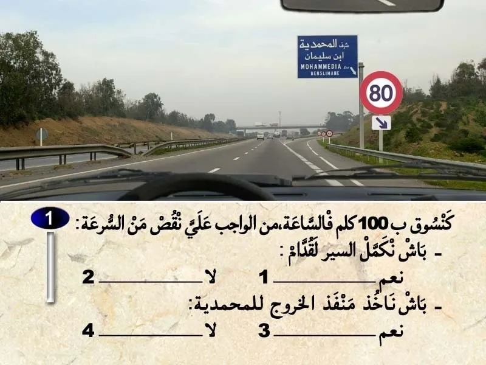
الجواب الصحيح: 2 و 3
نتواجد حاليا في طريق سيّار (هذا واضح من خلال اللافتات الطّرقية الزرقاء)، أسير بسرعة 100 كلم في الساعة، إذا كنت أريد أن أكمل السّير للأمام فليس من الواجب عليّ الإنقاص من السرعة لأن السرعة القصوى في الطّريق السّيار هي 120 كلم في الساعة وأنا أسير ب 100 كلم في الساعة. بالنسبة لكي أقوم بأخد منفذ الخروج (المحمدية) فيوجد لافتة تحديد السرعة في 80 كلم في الساعة، إذن واجب عليّ أن أقوم بالإنقاص من السرعة إذا أردت أخد منفذ الخروج للمحمدية.
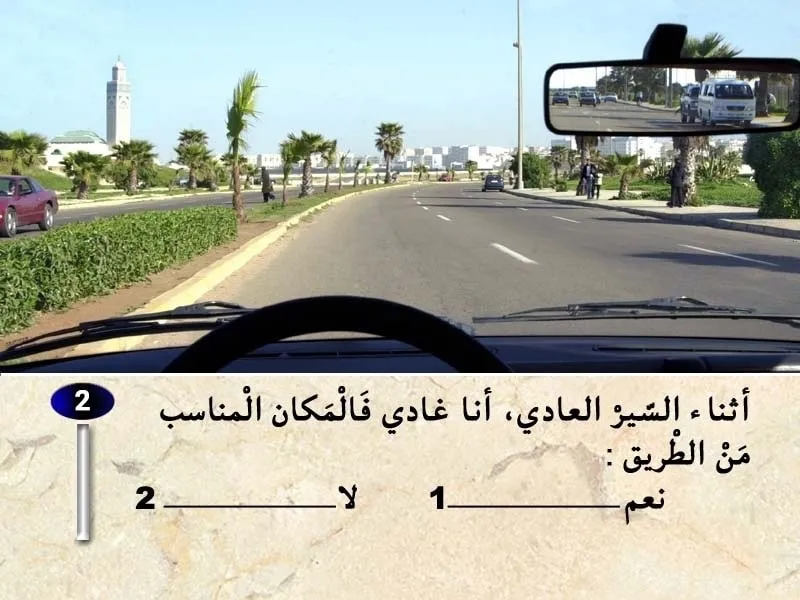
الجواب الصحيح: 2
أثناء السّير العادي فأنا لا أتواجد في المكان المناسب من الطّريق، المسلك الذي أتواجد فيه الان هو مسلك التّجاوز، لكي أتواجد في المكان المناسب من الطّريق أثناء السّير العادي فيجب عليّ أن أسير في المسلك المتواجد أقصى اليمين
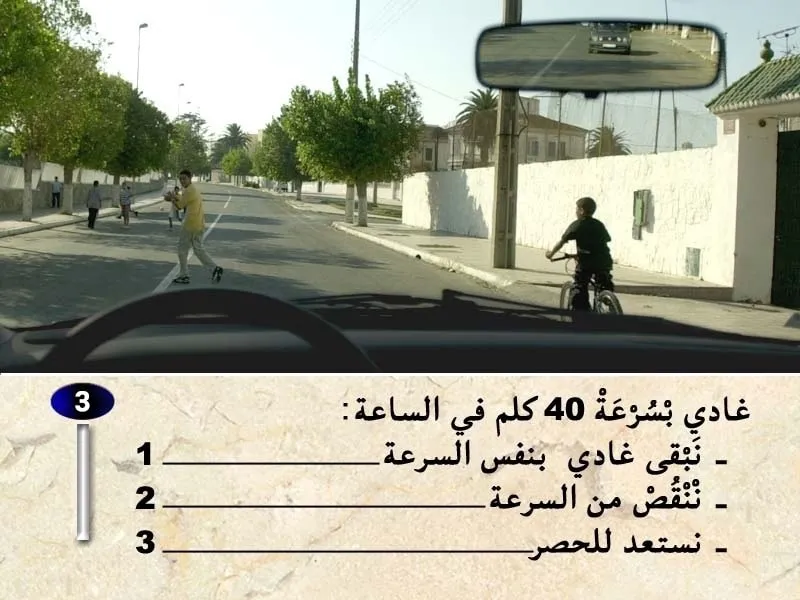
الجواب الصحيح: 2 و 3
يوجد بعض الأطفال على قارعة الطّريق وهذا الأمر يشكل خطر، وعند وجود خطر فيجب علينا الإنقاص من السرعة. أيظا يجب عليّ أن أستعد للحصر لأنه في أي لحظة يمكن للأطفال أن يقوموا بالدخول للطّريق أو يقوموا بتصرف بدون تفكير، لذلك يجب أن أكون مستعد للحصر في أي لحظة.
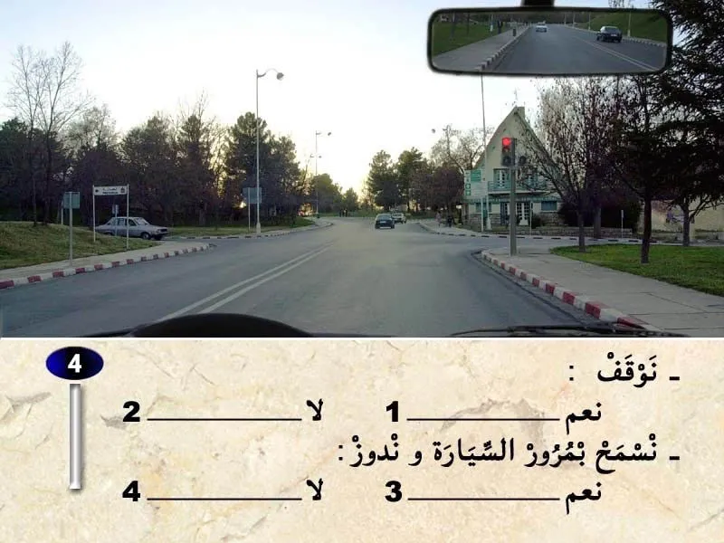
الجواب الصحيح: 1 و 4
أتواجد قرب ملتقى الطّرق مع إشارة المرور، الإشارة الضوئية حمراء، إذن يجب عليّ الوقوف. لا يمكنني المرور بعد أن أسمح للسّيارة بالمرور، لأنه لديّ إشارة ضوئية حمراء، يجب أن أنتظر الإشارة الضوئية لكي تصبح باللون الأخضر لكي أتمكّن من المرور وليس المرور بعد مرور السّيارة.
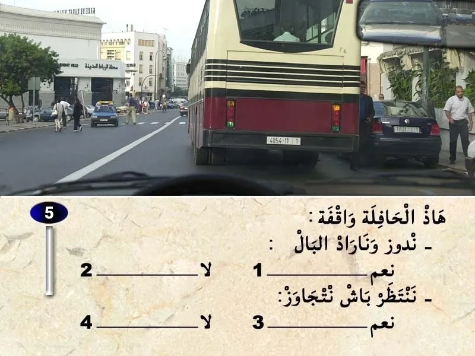
الجواب الصحيح: 2 و 3
الحافلة متوقفة لكي تُنْزل الرّكاب وتقوم بإكمال السّير، كما نلاحظ في الصورة فالتّشوير الأفقي الخط المتّصل يمنعني من عملية تجاوز الحافلة، لذلك لا يمكنني تجاوز الخط المتّصل والمرور. يجب عليّ الإنتظار للتّجاوز لأنه لا يمكنني تجاوز الحافلة الان.
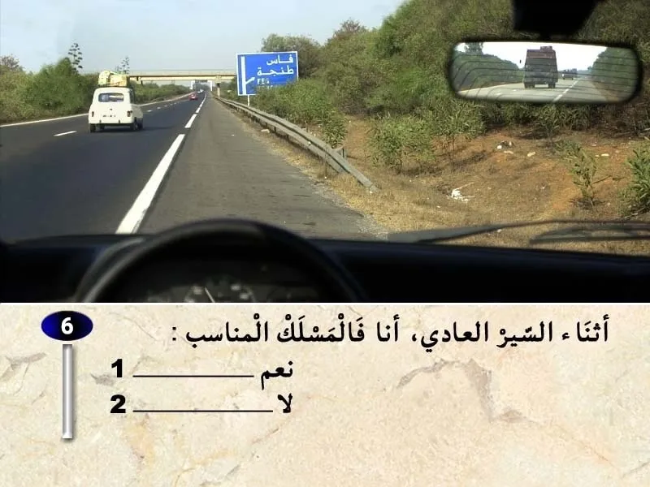
الجواب الصحيح: 2
أتواجد الان في مسلك شريط التوقّف الإستعجالي، وهو يُستعمل للوقوف أو التوقّف في الحالات الإستعجالية فقط. ولا يمكنني إستعماله للسّير. إذن أنا لست في المسلك المناسب للسّير. (المسلك المناسب أثناء السّير العادي هو المسلك المتواجد على الجهة اليسرى، المسلك الذي تسير فيه السّيارة البيضاء).
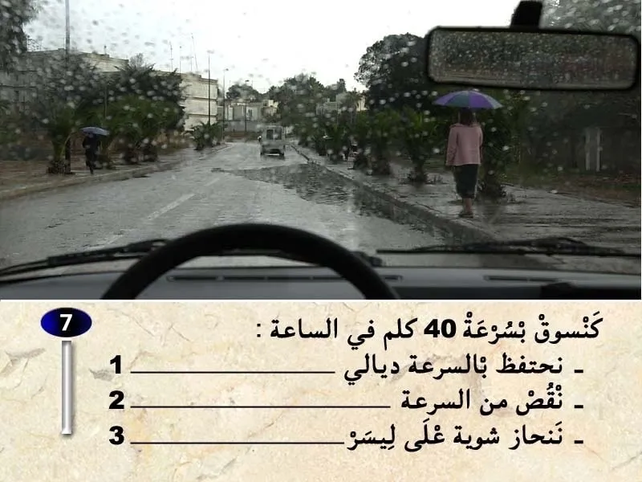
الجواب الصحيح: 2 و 3
يوجد خطر أمامي وهو بِركة الماء، وفي حالات الخطر نقوم بالإنقاص من السرعة. ومن أداب الطّريق سوف أقوم بالإنحياز قليلا لليسار لكي لا أقوم برَش الرّاجل المتواجد على الجهة اليمنى بماء البِركة.
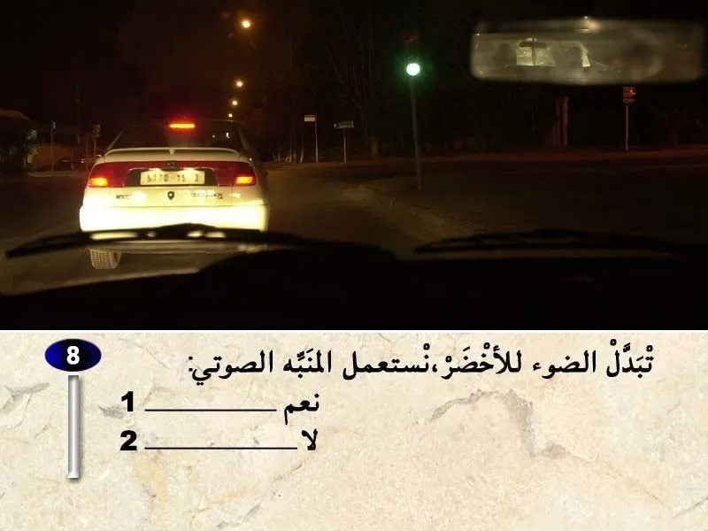
الجواب الصحيح: 2
لا يمكنني إستعمال المنبّه الصوتي في الفترة الليلية، ولو وُجب الأمر لكي أقوم بالتّنبيه في الفترة الليلية فأقوم بالتّنبيه بإستعمال إشارة ضوئية ولا أقوم بالتّنبيه بالمنبّه الصوتي.
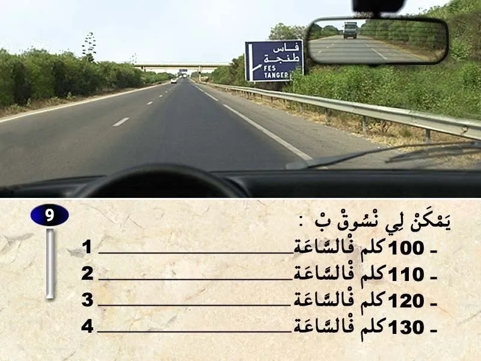
الجواب الصحيح: 1 و 2 و 3
نتواجد في طريق سيار وأقصى سرعة يمكننا السير بها في الطّريق السيّار هي 120 كلم في الساعة، إذن يمكنني السّير بسرعة 100 كلم في الساعة، ويمكنني السّير بسرعة 110 كلم في الساعة ويمكنني أيظا السير بسرعة 120 كلم في الساعة.
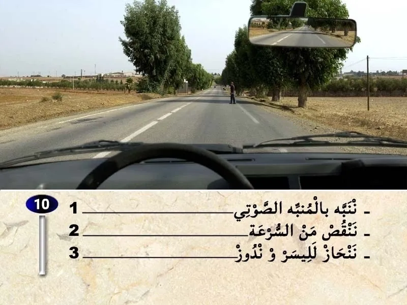
الجواب الصحيح: 2
يوجد راجل أمامي وسط الطّريق، ممنوع إستعمال المنبّه الصوتي عليه. وبما أن الراجل يوجد وسط الطّريق فهو يشكل خطر، وفي الخطر نقوم بالإنقاص من السرعة. لا يمكنني الإنحياز لليسار والمرور لأن المسلك المتواجد على اليسار فهو خاص بالعربات القادمة من الإتّجاه المعاكس خصوصا وأن المسافة بين الخطوط صغيرة جدا وهي تعني على أن الخط سوف يصبح متّصل أي أنه يمنعني من تجاوزه. أيظا مسار الراجل يوضّح أنه يريد السّير للجهة اليسرى، إذن يوجد إحتمال أن يقوم بالإتّجاه لليسار، لذلك لا يمكنني الإنحياز لليسار. الجواب المنطقي هو أن أقوم بالإنقاص من السّرعة.
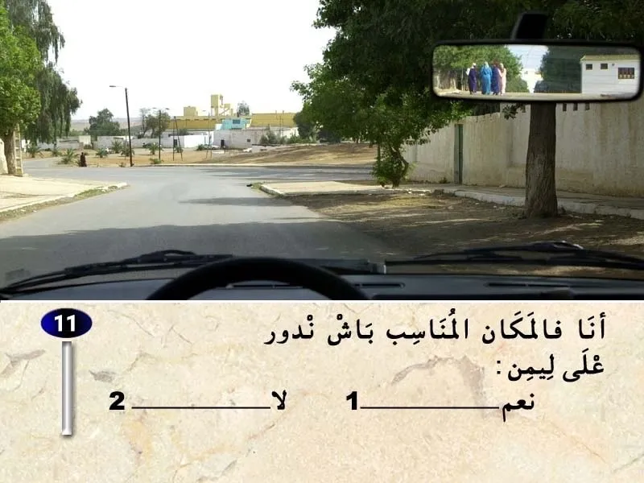
الجواب الصحيح: 1
العربات التي تريد الإنعطاف لليمين يجب عليها أن تَتَواجَد على اليمين، أنا الان متواجد على اليمين، إذن أنا في المكان المناسب للإنعطاف على اليمين.
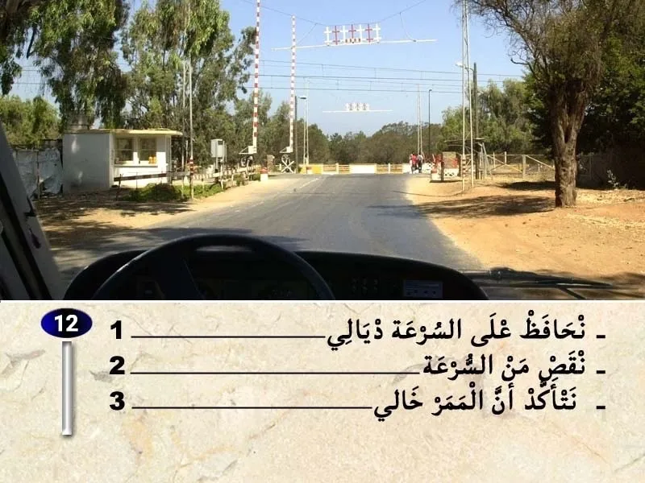
الجواب الصحيح: 2 و 3
أنا قرب ممر السكة بحواجز، ولافتة ممر السكة بحواجز تكون في علامات الخطر، وفي علامات الخطر يجب عليّ الإنقاص من السّرعة. وفي ممر السكة يجب علي التأكد دائما على أن ممر السكة خالي وبعد ذلك يمكنني المرور.
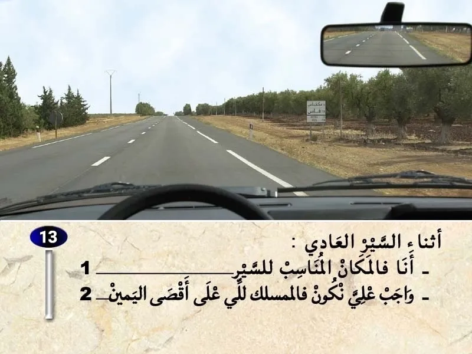
الجواب الصحيح: 1
أنا أتواجد في المسلك المناسب أثناء السّير العادي. (المسلك الموجود أقصى اليمين فهو مخصص للدّراجات).
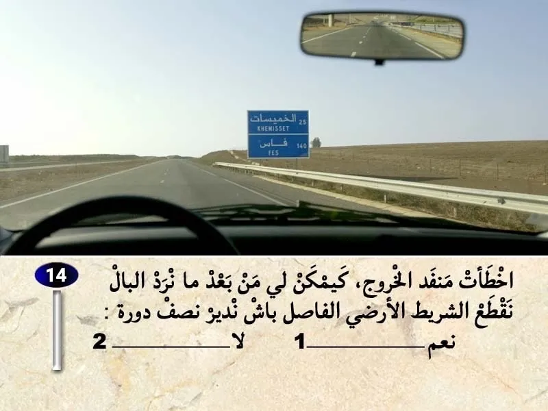
الجواب الصحيح: 2
كما نلاخط فنحن نتواجد في طريق سيار. أثناء تواجدنا في الطريق السيار وحتى ولو أخطأت في منفذ الخروج فلا يمكنني أبدا أن أقوم بنصف دورة والرجوع لأنني سوف أتقابل مع سيارات تسير في الإتجاه المقابل. (ممنوع عمل نصف دورة).
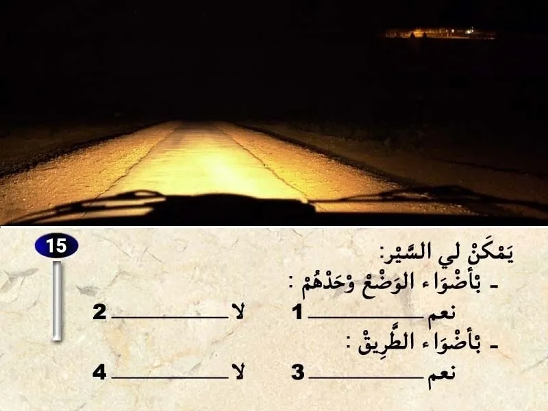
الجواب الصحيح: 2 و 3
أثناء السّير فنستعمل أضواء الوضع عندما نتواجد داخل المدينة وفي الفترة الليلية وإنارة الشّارع موجودة، إذن في هذه الحالة لا يمكنني إستعمال أضواء الوضع أولا لأنني خارج المدينة وثانية لا توجد إنارة الشّارع. بالنسبة لأضواء الطّريق فنستعملهم عندنا نتواجد خارج المدينة، وفي الفترة الليلية ولا توجد سيارات أمامي أو أتقابل معها ولا توجد إنارة، إذن في هذه الحالة يمكنني إستعمال أضواء الطّريق لأنني خارج المدينة وفي الفترة الليلية ولا توجد إنارة وأيظا لا توجد عربات أمامي. الإجابة الصحيحة فهي 2 و 3.
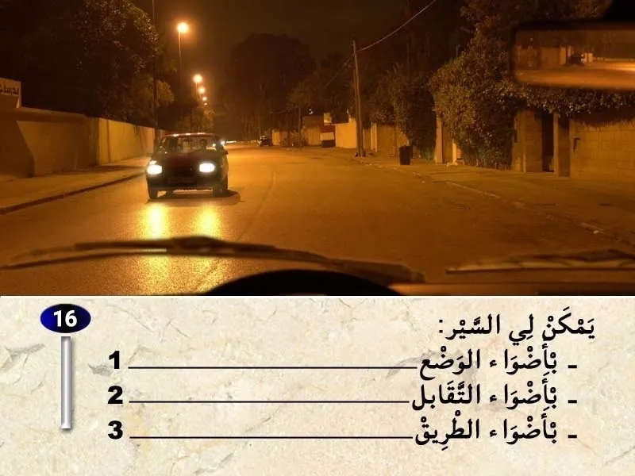
الجواب الصحيح: 1 و 2
بما أننا نتواجد في الفترة الليلية وإنارة الشّارع مشتعلة فيمكننا في هذه الحالة إستعمال أضواء الوضع أو أضواء التّقابل (أو هما معا). بما أنني أتقابل مع عربة فلا يمكنني إستعمال أضواء الطّريق.
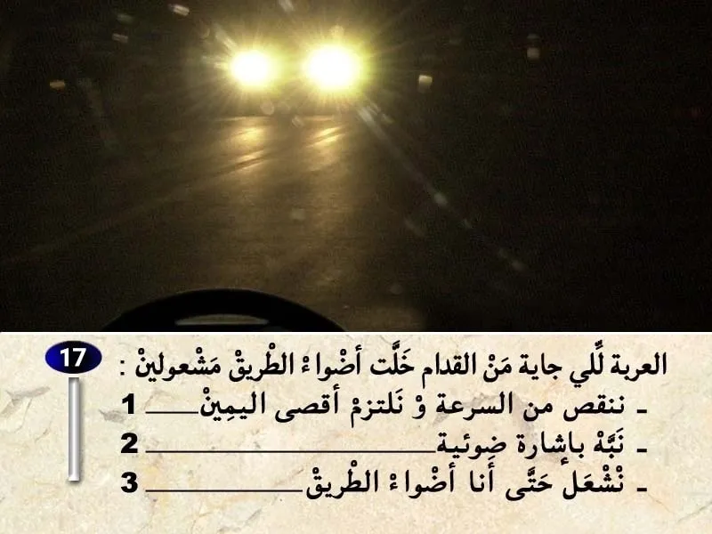
الجواب الصحيح: 1 و 2
العربة التي أتقابل معها تركت أضواء الطّريق مشتغلة، في هذه الحالة ولكي يكون التّقابل بيني وبين العربة اَمن، فيجب عليّ الإنقاص من السّرعة والتزام أقصى اليمين وكذلك التّنبيه بإشارة ضوئية لكي أُنبّه سائق العربة لكي يقوم بتغيير أضواء الطّريق إلى أضواء التّقابل بما أنه يتقابل معي. (لا يمكنني استعمال أضواء الطّريق ايضا لأنه ممنوع، بما أنني أتقابل مع هذه العربة).
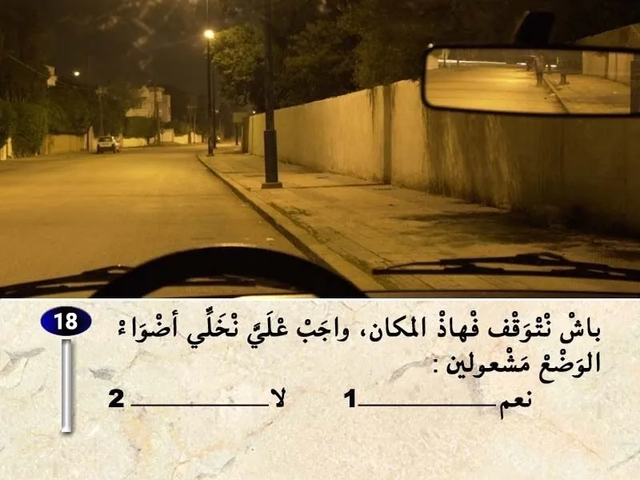
الجواب الصحيح: 2
لكي أتوقّف في هذا المكان (أترك السّيارة وأذهب) فليس من الواجب عليّ ترك أضواء الوضع مشتعلة. لأنه توجد إنارة الشارع وهي تظهر السّيارة في حالة قمنا بالتوقّف. (لو كان السؤال يقول هل يمكننا ترك أضواء الوضع مشتعلة فهنا يمكننا الإجابة بنعم، لكن بما أن السؤال يقول من الواجب، إذن في هذه الحالة وفي وجود إنارة الشارع فليس من الواجب علينا ترك أضواء الوضع مشتعلة).
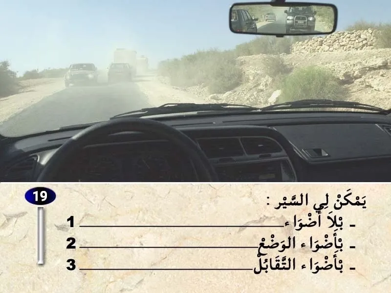
الجواب الصحيح: 2 و 3
كما نلاحظ الرؤية محدودة وصعبة (يوجد غبار كثيف) في هذه الحالة نقوم بالسّير بإستعمال أضواء التّقابل بالاضافة لإمكانية إستعمال أضواء الوضع مع أضواء التقابل،.
⚠️ ملاحظة: يمكن استعمال أضواء الوضع في آن واحد مع أضواء الطريق وأضواء التقابل والأضواء الخاصة بالضباب، ويمكن كذلك استعمالها وحدها عند وقوف المركبة أو توقفها أو عندما تكون ظروف الإنارة على الطرق، ماعدا الطريق السيار أو الطرق ذات المسالك الخاصة. الجواب الصحيح هو رقم 2 و 3..
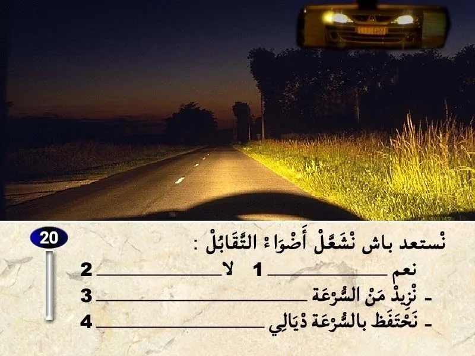
الجواب الصحيح: 1 و 4
نتواجد خارج المدينة ولا توجد إنارات الشّارع ولا توجد عربات أمامي لذلك أنا الان أسير بأضواء الطّريق، لكن لو لاحظنا أنه في المراة الدّاخلية للسيّارة فإنه توجد سيّارة من الخلف تستعد لكي تتجاوزني إذن سوف تصبح السيّارة أمامي وفي هذه الحالة يجب عليّ الإستعداد لتغيير أضواء الطّريق إلى أضواء التّقابل (لأنه لا يمكنني إستعمال أضواء الطّريق). وبما أنه السيّارة تستعد لكي تتجاوزني فالقاعدة تقول: عندما تستعد سيّارة لتجاوزي، فيجب عليّ الإحتفاظ بالسّرعة التي أسير بها ولا أقوم بزيادة في السرعة.
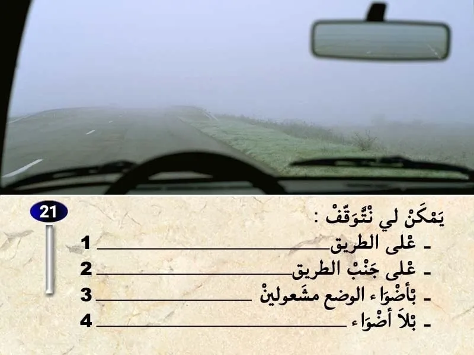
الجواب الصحيح: 2 و 3
في هذا المكان وخارج المدينة فلا يمكنني التوقّف أو الوقوف على الطّريق لأنه ممنوع، يمكنني فقط التوقّف على جنب الطّريق (أي على حاشية الطّريق). وفي هذه الحالة وبما أنه يوجد ضباب والرؤية غير واضحة فمن الواجب عليّ أن أقوم بتشغيل أضواء الوضع، لكي يظهر عرض العربة للسائقين الاخرين في هذه الظروف المناخية الصّعبة.
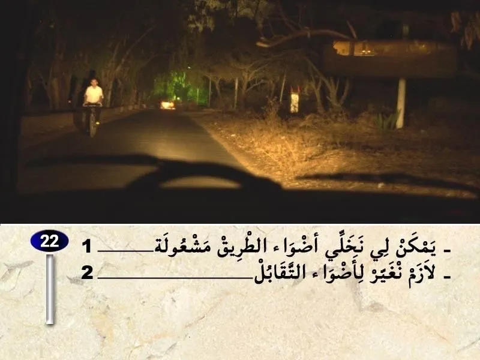
الجواب الصحيح: 2
بما أننا نتقابل مع صاحب دراجة فلا يمكننا الإبقاء على أضواء الطّريق شَغّالة، يجب علينا إستعمال أضواء التّقابل.
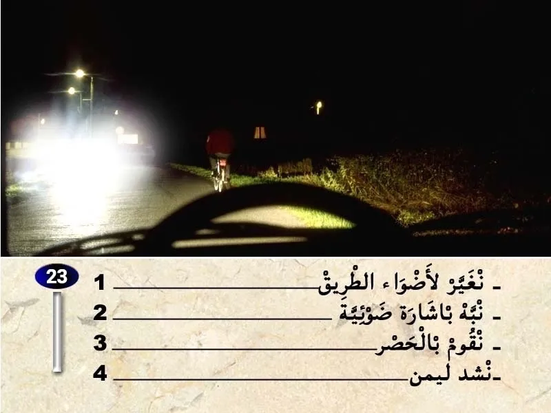
الجواب الصحيح: 2 و 3 و 4
سوف نتقابل مع عربة تستعمل أضواء الطّريق، لذلك أقوم بِتَنْبيهِه بإشارة ضوئية لكي يقوم صاحب العربة بتغيير أضواء الطّريق التي يستعملها إلى أضواء التّقابل، لكي تَسْهُل عملية التّقابل. وأقوم كذلك بالسّير أقصى اليمين (نْشد ليمن) لتفادي الانبهار بالضوء. وفي حالة ما إذا لم يستجب السائق الآخر، أو لم أعد أرى الطريق بوضوح، أو بسبب وجود الدراجة أمامي على اليمين، يمكنني القيام بالحصر (الفرملة) بشكل خفيف واحترازي لتفادي الخطر. ✳️ لا يمكن استعمال أضواء الطّريق في هذه الحالة لأنها تسبب انبهارًا، لكن التنبيه، نشد اليمين، والحصر، كلها تصرفات ممكنة حسب الوضعية. إذن الجواب الصحيح هو رقم 2 و 3 و 4.
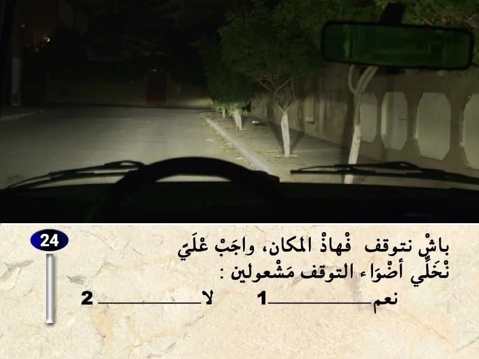
الجواب الصحيح: 1
كما نلاحظ فنحن نتواجد في شارع مظلم ولا توجد إنارات الشّارع، لذلك لكي أستطيع التوقّف في هذا المكان فمن الواجب عليّ أن أقوم بتشغيل أضواء الوضع (سوف تشتغل أضواء التوقّف بشكل تلقائي) لو كان الشارع توجد فيه إنارة ففي هذه الحالة ليس من الواجب عليّ ان أقوم بتشغيل أضواء الوضع (التوقّف).
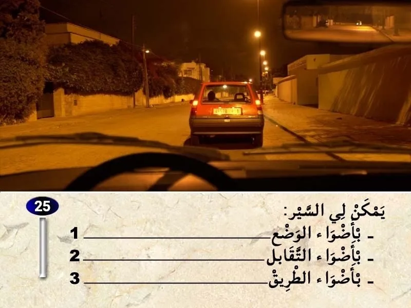
الجواب الصحيح: 1 و 2
في هذه الحالة الظاّهرة على الصورة وأثناء السّير فيمكنني السّير بأضواء الوضع لأننا نتواجد داخل المدينة وإنارات الشوارع مشتعلة وفي الفترة الليلية. وأيظا بالنسبة لأضواء التّقابل نقوم بإستعمالهم عندما نتواجد داخل المدينة وإنارات الشوارع مشتعلة وفي الفترة اللّيلية. (للتوضيح: أيظا يمكننا إستعمال أضواء التّقابل عندما تكون الحالة الجوّية صعبة، مثلا المطر أو الضباب أو الثلج، إلخ وكذلك عند الدّخول في نفق ... (بالنسبة لأضواء الطّريق فنستعملهم عندما نتواجد خارج المدينة وإنارة الشارع لا تشتغل ولا توجد عربات في الأمام). الإجابة الصحيحة 1 و 2.
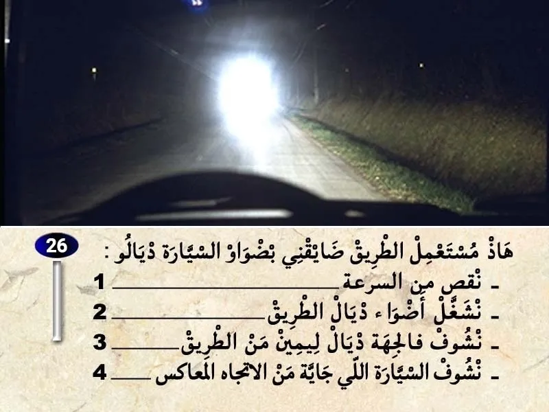
الجواب الصحيح: 1 و 3
سائق السيّارة التي تقابلني يستعمل أضواء الطّريق وهذا ممنوع وعليه أن يغيّر أضواء الطّريق إلى أضواء التّقابل، لذلك في هذه الحالة وبما أن الرؤية صعبة لأن سائق العربة التي أمامي يستعمل أضواء الطّريق فيجب عليّ الإنقاص من السرعة وأنظر إلى الجهة اليمنى للطّريق لكي أتتبع الخطوط لكي أراقب حاشية الطّريق و لكي تسهل عملية التّقابل. لا يمكنني إستعمال أضواء الطّريق عند التّقابل مع عربة وأيظا عليّ تجنب النّظر إلى أضواء الطّريق التي يستعملها سائق العربة لكي أتفادى الانبهار.
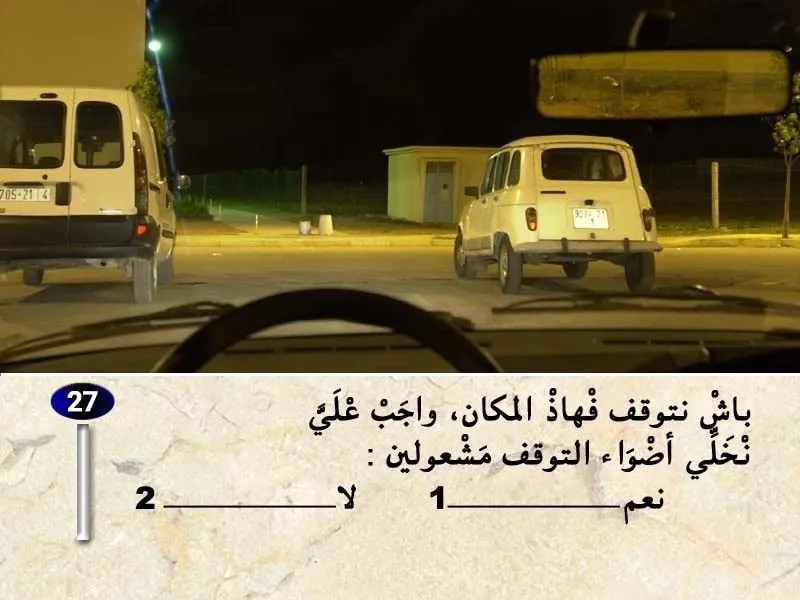
الجواب الصحيح: 2
أتواجد في موقف السيارات، في هذه الحالة فإنه ليس من الواجب عليّ أن أترك أضواء التوقّف مشتعلة لكي أتوقّف.
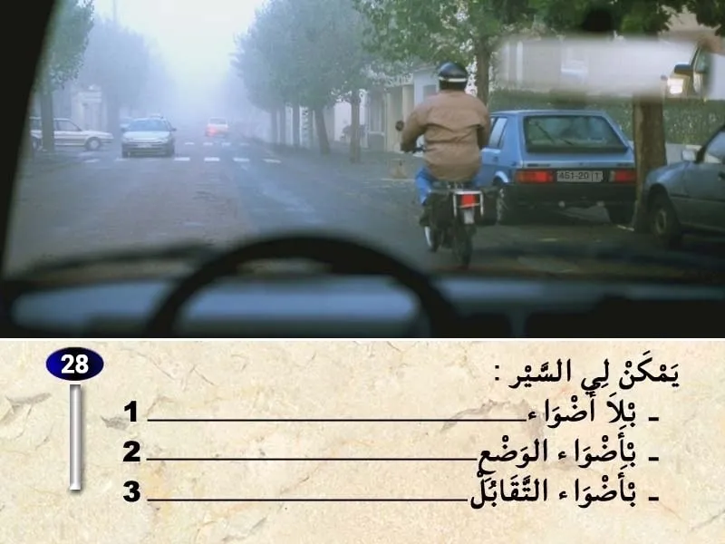
الجواب الصحيح: 2 و 3
في هذه الحالة أثناء في وجود ضباب، فقاعدة السياقة مع وجود ضباب تقول على انه يجب علينا السّير بإستعمال أضواء التّقابل وأضواء الضباب الأمامية وأيضا أضواء الضباب الخلفية، بالاضافة لإمكانية إستعمال أضواء الوضع مع أضواء التقابل او الضبابة. بطبيعة الحال لا يمكننا السّير بدون أضواء في حالات الطقس الصعبة مثل الضباب، لذلك يمكننا في هذه الحالة إستعمال أضواء الوضع مع أضواء التّقابل.
⚠️ ملاحظة: يمكن استعمال أضواء الوضع في آن واحد مع أضواء الطريق وأضواء التقابل والأضواء الخاصة بالضباب، ويمكن كذلك استعمالها وحدها عند وقوف المركبة أو توقفها أو عندما تكون ظروف الإنارة على الطرق، ماعدا الطريق السيار أو الطرق ذات المسالك الخاصة. الجواب الصحيح هو رقم 2 و 3.
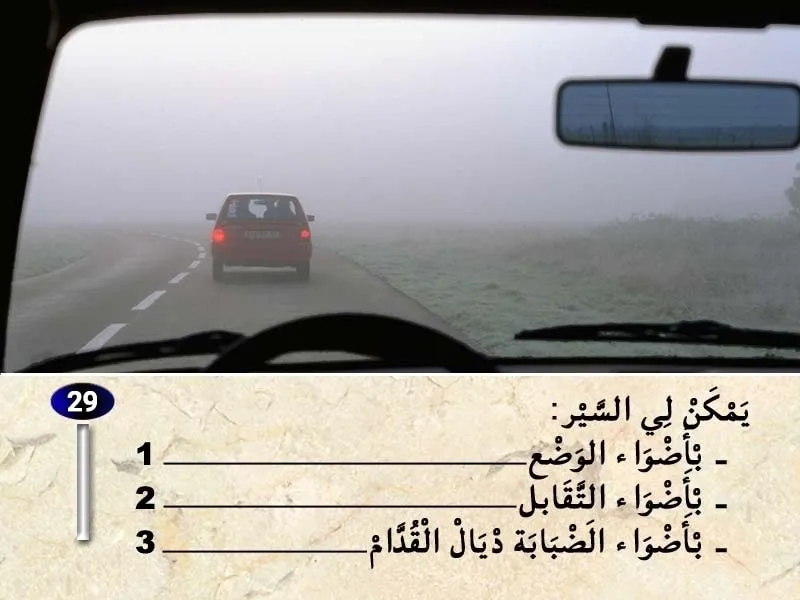
الجواب الصحيح: 1 و 2 و 3
في هذه الحالة أثناء في وجود ضباب، فقاعدة السياقة مع وجود ضباب تقول على انه يجب علينا السّير بإستعمال أضواء التّقابل وأضواء الضباب الأمامية وأيضا أضواء الضباب الخلفية، بالاضافة لإمكانية إستعمال أضواء الوضع مع أضواء التقابل او الضبابة.
⚠️ ملاحظة: يمكن استعمال أضواء الوضع في آن واحد مع أضواء الطريق وأضواء التقابل والأضواء الخاصة بالضباب، ويمكن كذلك استعمالها وحدها عند وقوف المركبة أو توقفها أو عندما تكون ظروف الإنارة على الطرق، ماعدا الطريق السيار أو الطرق ذات المسالك الخاصة. (بما انه يوجد في الإختيارات فقط أضواء الضبابة الأمامية فنقوم بإختيارها على الرغم من عدم وجود أضواء الضباب الخلفية.) الجواب الصحيح هو رقم 1، 2 و 3.
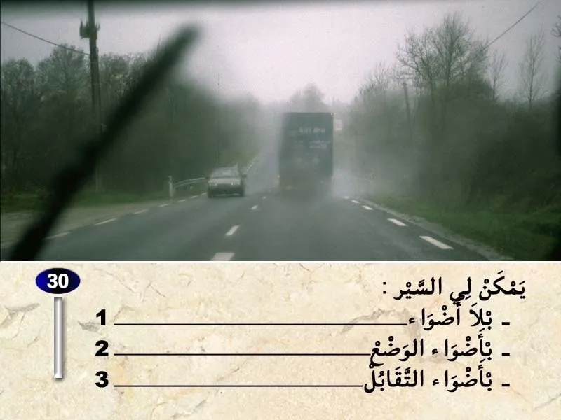
الجواب الصحيح: 2 و 3
في هذه الحالة أثناء في وجود مطر، فقاعدة السياقة مع الطقس الممطر تقول على انه يجب علينا السّير بإستعمال أضواء التّقابل و أضواء الضباب الأمامية، بالاضافة لإمكانية إستعمال أضواء الوضع مع أضواء التقابل او الضبابة. بطبيعة الحال لا يمكننا السّير بدون أضواء في حالات الطقس الصعبة مثل المطر، لذلك يمكننا في هذه الحالة إستعمال أضواء الوضع مع أضواء التّقابل.
⚠️ ملاحظة: يمكن استعمال أضواء الوضع في آن واحد مع أضواء الطريق وأضواء التقابل والأضواء الخاصة بالضباب، ويمكن كذلك استعمالها وحدها عند وقوف المركبة أو توقفها أو عندما تكون ظروف الإنارة على الطرق، ماعدا الطريق السيار أو الطرق ذات المسالك الخاصة. الجواب الصحيح هو رقم 2 و 3.
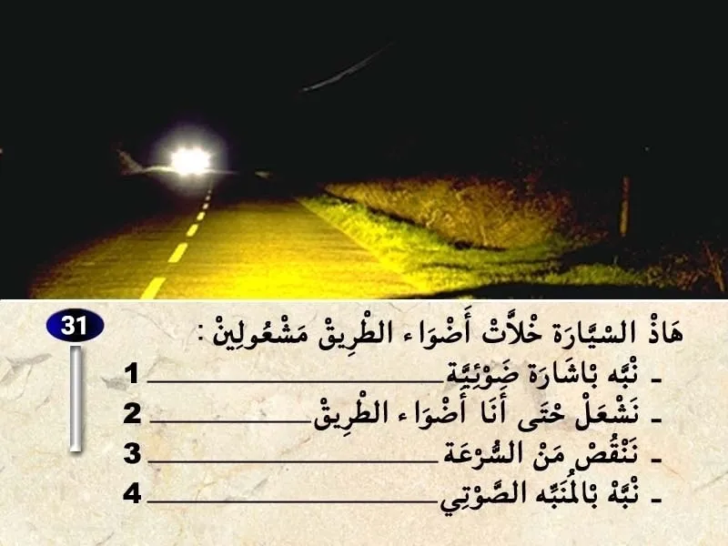
الجواب الصحيح: 1 و 3
أتقابل مع عربة تستعمل أضواء الطّريق لذلك أقوم بِتَنْبيهِه بإشارة ضوئية لكي يقوم صاحب العربة بتغيير أضواء الطّريق التي يستعمل إلى أضواء التّقابل لكي تَسْهُل عملية التّقابل. وأقوم كذلك بالإنقاص من السّرعة. (لا يمكن إستعمال أضواء الطّريق عندما نتقابل مع عربة، ولا يمكنني التّنبيه بالمنبّه الصوتي لأنه ممنوع في الفترة الليلية ). إذن في هذه الحالة فقط أقوم بالتّنبيه بإشارة ضوئية لكي يقوم صاحب العربة بتغيير أضواء الطّريق إلى أضواء التّقابل وأنقص من السرعة.
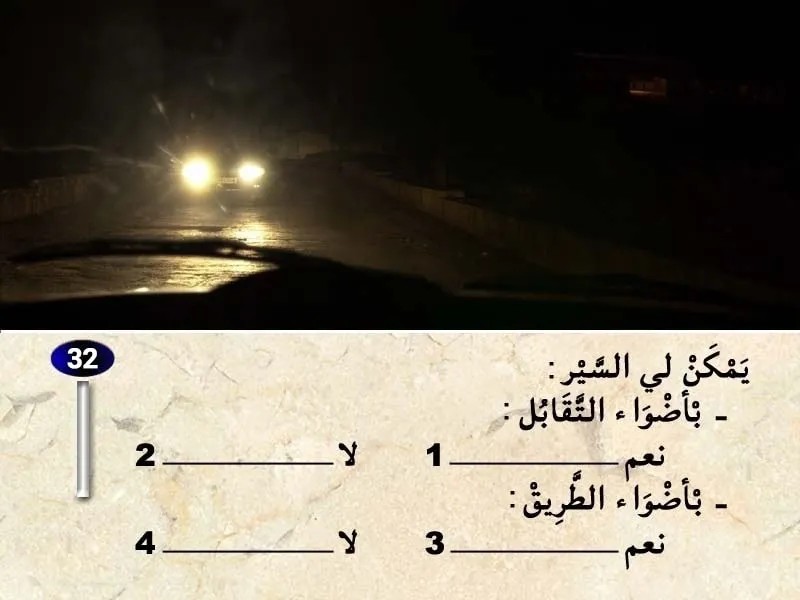
الجواب الصحيح: 1 و 4
في هذه الحالة يمكنني السّير وأنا أستعمل أضواء التّقابل لأنني أتقابل مع سيارة، لكن لا يمكنني السّير بإستعمال أضواء الطّريق لأنني أتقابل مع سيارة. (لا يمكني إستعمال أضواء الطّريق أذا كانت سيارة أمامي أيظا) يمكن إستعمال أضواء الطّريق فقط عندما نتواجد خارج المدينة ولا توجد سيارات أمامي أو في الإتجاه المعاكس ونتواجد في الفترة الليلية ولا توجد إنارة.
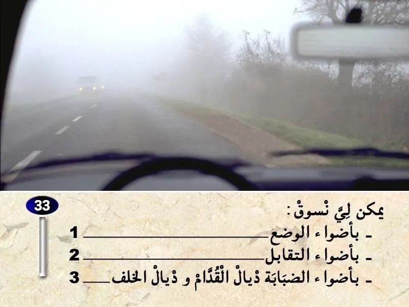
الجواب الصحيح: 1 و 2 و 3
في هذه الحالة أثناء في وجود ضباب، فقاعدة السياقة مع وجود ضباب تقول على انه يجب علينا السّير بإستعمال أضواء التّقابل وأضواء الضباب الأمامية وأيضا أضواء الضباب الخلفية، بالاضافة لإمكانية إستعمال أضواء الوضع مع أضواء التقابل او الضبابة.
⚠️ ملاحظة: يمكن استعمال أضواء الوضع في آن واحد مع أضواء الطريق وأضواء التقابل والأضواء الخاصة بالضباب، ويمكن كذلك استعمالها وحدها عند وقوف المركبة أو توقفها أو عندما تكون ظروف الإنارة على الطرق، ماعدا الطريق السيار أو الطرق ذات المسالك الخاصة. الجواب الصحيح هو رقم 1، 2 و 3.
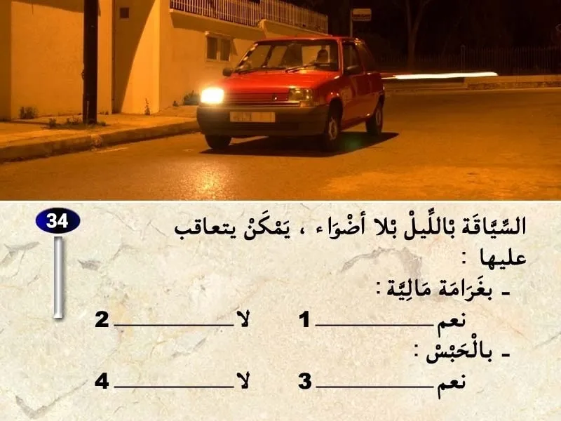
الجواب الصحيح: 1 و 4
السياقة بلا أضواء في الفترة الليلية فهي تُعَرِّض سائق السّيارة إلى غرامة مالية فقط، ولا يتعرض السائق إلى عقوبة السجن.
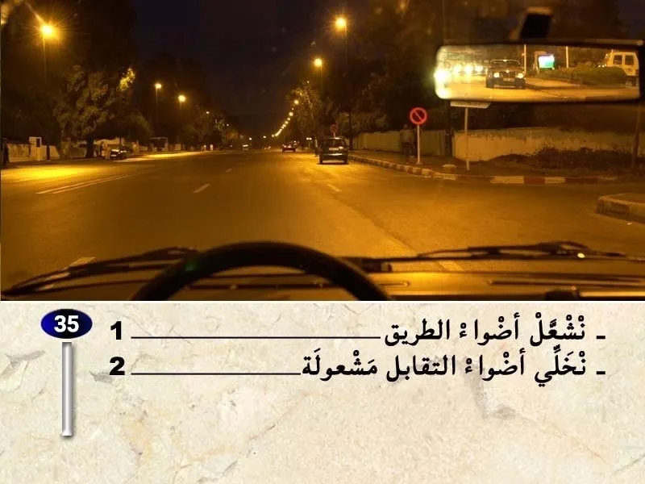
الجواب الصحيح: 2
نقوم بإستعمال أضواء الطّريق عندما نتواجد خارج المدينة وفي الفترة الليلة ولا توجد إنارة وكذلك لا توجد سيارات أمامي أو أتقابل معها، إذن هنا لا يمكنني إستعمال أضواء الطّريق لأنني داخل المدينة وتوجد إنارة. بالنسبة لأضواء التّقابل فيمكنني أن أستعملها للسّير داخل المدينة.
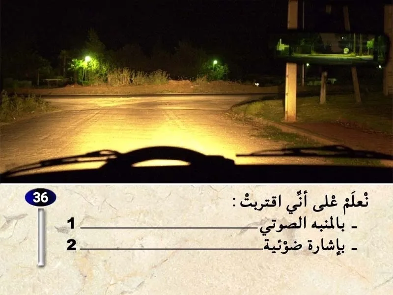
الجواب الصحيح: 2
المنبه الصوتي ممنوع في الفترة الليلية، يمكنني أن أعلم أنني إقتربت من ملتقى الطّرق عن طريق التنبيه بإشارة ضوئية.
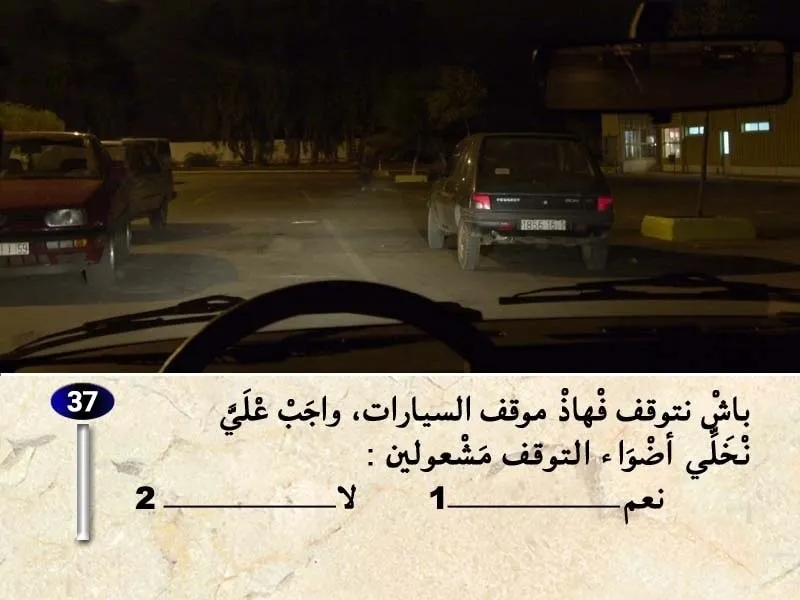
الجواب الصحيح: 2
في موقف السيارات (حتى في الفترة الليلية) ليس من الواجب عليّ ترك أضواء التوقّف (الوضع) مُشتعلة إذا أردت التوقّف.
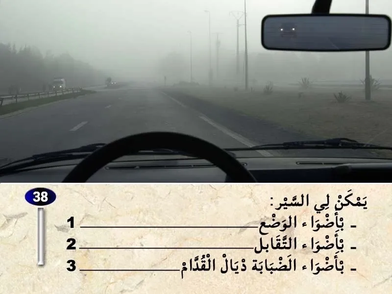
الجواب الصحيح: 1 و 2 و 3
في هذه الحالة أثناء في وجود ضباب، فقاعدة السياقة مع وجود ضباب تقول على انه يجب علينا السّير بإستعمال أضواء التّقابل وأضواء الضباب الأمامية وأيضا أضواء الضباب الخلفية، بالاضافة لإمكانية إستعمال أضواء الوضع مع أضواء التقابل او الضبابة.
⚠️ ملاحظة: يمكن استعمال أضواء الوضع في آن واحد مع أضواء الطريق وأضواء التقابل والأضواء الخاصة بالضباب، ويمكن كذلك استعمالها وحدها عند وقوف المركبة أو توقفها أو عندما تكون ظروف الإنارة على الطرق، ماعدا الطريق السيار أو الطرق ذات المسالك الخاصة. الجواب الصحيح هو رقم 1، 2 و 3.
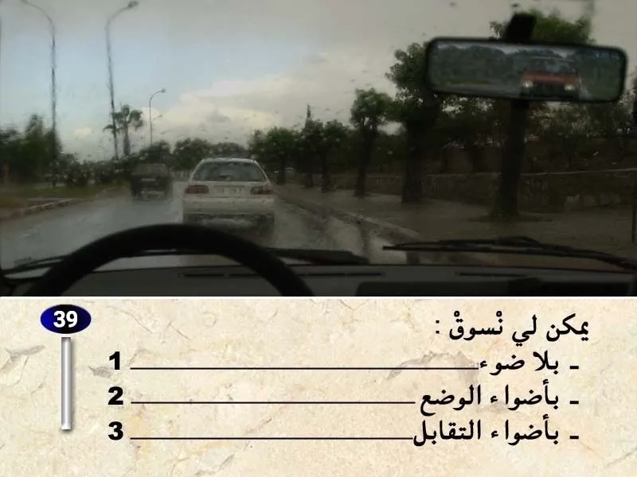
الجواب الصحيح: 2 و 3
في هذه الحالة نلاحظ على أن الجو مُمْطر، فقاعدة السياقة مع الطقس المُمْطر تقول على انه يجب علينا السّير بإستعمال أضواء التّقابل و أضواء الضباب الأمامية، بالاضافة لإمكانية إستعمال أضواء الوضع مع أضواء التقابل او الضبابة. بطبيعة الحال لا يمكننا السّير بدون أضواء في حالات الطقس الصعبة مثل المطر، لذلك يمكننا في هذه الحالة إستعمال أضواء الوضع مع أضواء التّقابل.
⚠️ ملاحظة: يمكن استعمال أضواء الوضع في آن واحد مع أضواء الطريق وأضواء التقابل والأضواء الخاصة بالضباب، ويمكن كذلك استعمالها وحدها عند وقوف المركبة أو توقفها أو عندما تكون ظروف الإنارة على الطرق، ماعدا الطريق السيار أو الطرق ذات المسالك الخاصة. الجواب الصحيح هو رقم 2 و 3.
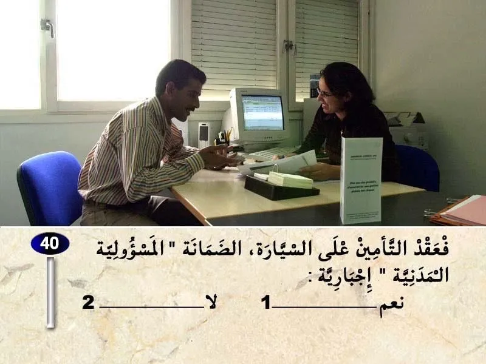
الجواب الصحيح: 1
شهادة التأمين إجبارية لكي يستطيع السائق أن يسوق السيّارة ومن الضروري أن يتوفّر عليها السائق. عند شركة التأمين ولكي نقوم بعمل شهادة التأمين فيوجد الكثير من الأنواع ومن بين أنواع التأمينات يوجد تأمين يُسمى بالتأمين الدنيوي الإجباري (يسمى كذلك المسؤولية المدنية) ويسمى بهذا الإسم لأنه يقوم بالتعويض عن الخسائر الجسمانية. لذلك فهذا التامين فهو إجباري.